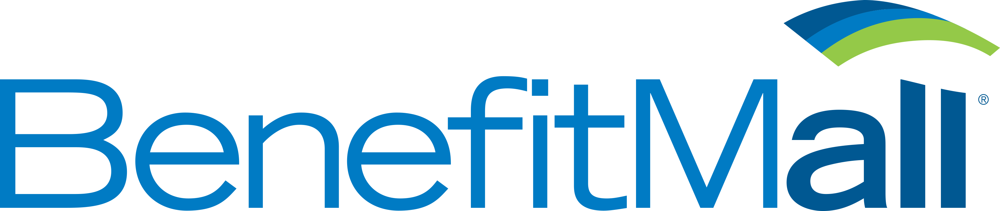

Resume
Education
 Nashville Software School
Nashville Software School
Software Developer - Boot camp
Fully immersive, intense, fast paced boot camp to learn the craft of software development. The Web Developer Bootcamp is a six-month, full-time program (full-year-long, part-time program also). The curriculum teaches the skills and technologies required to become a full-stack software developer. The core technologies that students use in this course are the three standard languages of the web: HTML, CSS and JavaScript. This course prepares students to work and build the code associated with websites, web apps and hybrid mobile applications. Intensive coding training: front and back end. HTML, CSS, JavaScript, jQuery, Git, GitHub, JSON, Ajax, node.js, .NET, C#, etc.
Tepic Insitute of Technology
Bachelors of Science in Information Technology
Bachelor's degree awarded for an undergraduate course or program in the Information Technology field. The degree is normally required in order to work in the Information Technology industry. A Bachelor of Science in Information Technology degree program is primarily focused on subjects such as software, databases, and networking. This degree is awarded for completing a program of study in the field of software development, software testing, software engineering, web design, databases, programming, computer networking and computer systems. Graduates with an information technology background are able to perform technology tasks relating to the processing, storing, and communication of information between computers, mobile phones, and other electronic devices.
Work Experience
 Propel Wellness, Inc
Propel Wellness, Inc
Application (Web) Developer.
August 2017 - Present
- Consistently write, translate, and code software programs and applications according to specifications
- User Interface (UI) design, analysis, strategy, development and testing for Propel (online corporate wellness software)
- Preparing custom themes with client's branding and customized UI features for new and existing Propel clients
- Design and creation of new logos, icons, and other graphic elements for custom theme of Propel clients
- Participating in various stages of website and web application development which may include: Strategy and Outlines; and Web Design
- Front-End Development (HTML, CSS, .Less/.Scss, JS/jQuery, AngularJS, Vue.js)
- CMS Setup (primarily Umbraco, including ASP.NET MVC, views/macros using Razor/C#)
- Responsible for the quality assurance of program logic, data processing, and error resolution
- Run tests on new and existing software for the purposes of correcting mistakes, isolating areas for improvement and general debugging
 The Visibility Company
The Visibility Company
UX/UI Application Developer Junior.
March 2016 - August 2017
- User Interface (UI) design, strategy, development and testing for Propel (online corporate wellness software)/li>
- Preparing custom themes with client's branding and customized UI features for new and existing Propel clients
- Participating in various stages of website and web application development which may include: Strategy and Outlines; and Web Design
- Front-End Development (HTML, CSS, JS/jQuery, AngularJS)
- CMS Setup (primarily Umbraco, including ASP.NET MVC, views/macros using Razor/C#)
Nashville Software School
Software Developer.
Jan 2015 - Jan 2016
- Front End: HTML, CSS, SASS, Jade, JavaScript, jQuery, AngularJS, AJAX, Bootstrap, Firebase, Razor, ASP.NET
- Back End: C#, .NET, SQL Databases, WPF, XAML, ASP.NET MVC, Razor, Entity Framework, TestStack White, Code First Database Patterns
- UX & UI for Digital Product Design: Customer and User Research, Research Methods and Analytics, Wireframe and Prototype, Visual Design (Hi-Fidelity), Usability Testing and Best Practices, Product Management.
- Tools: Grunt, Gulp, VIM, Git, GitHub, Sublime Text, Visual Studio, Command Line, RESTful API, MVC, SPAs, AWS Deployment, Bower, NPM
 BenefitMall, Inc
Sr. Applications Support Analyst.
Apr 2015 - Present
- Performing software testing, requirements gathering, bug investigation, training material development, and training.
- Testing, deploying, and diagnosing desktop applications, websites using HTML, CSS, JavaScript, ASP, ASP.NET, and web services.
- Maintaining servers and software, installing and configuring applications on Windows Server 2008 & 2012, IIS 6.0, 7.0 and 8.0, Windows 7, and 8, SQL Server 2005, 2008 & 2014; and Citrix Metaframe 4.5, 5.0, 6.0.
- Working in SQL with developers and DBA to test code changes to applications before pushed to production level servers.
- Writing SQL scripts as needed to update/modify data or views to correct issues with client data or database issues.
- Performing software upgrades.
- Administration of Citrix servers, including the set-up and the maintenance of new and existing clients.
 Waller, Lansden, Dortch & Davis, LLC
Waller, Lansden, Dortch & Davis, LLC
IT Desktop Support Analyst.
Sept 2013 - Apr 2015
- Performs software testing, requirements gathering, bug investigation, training material development, and training.
- Performs user administration duties (Exchange, Active Directory, SCCM, etc).
 CompuPay, Inc
CompuPay, Inc
Applications Support Analyst.
Jul 2011 - Oct 2013
- Testing, deploying, and diagnosing desktop applications, websites using HTML, CSS, JavaScript, ASP, ASP.NET, and web services.
- Maintaining servers and software, installing and configuring applications on Windows Server 2008 & 2012, IIS 6.0, 7.0 and 8.0, Windows 7, and 8, SQL Server 2005, 2008 & 2014; and Citrix Metaframe 4.5, 5.0, 6.0.
- Writing SQL scripts as needed to update/modify data or views to correct issues with client data or database issues.
- Performing software upgrades.
- Administration of Citrix servers, including the set-up and the maintenance of new and existing clients.